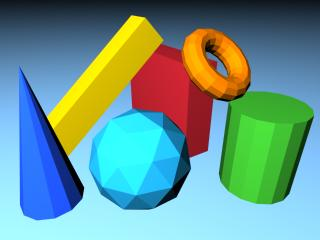

Aquesta tècnica, aplica l'equació del model d'il·luminació per a cada cara a un punt determinat (generalment un vèrtex) i assigna el mateix color a tota la resta de punts. Usualment, es calcula prèviament a inicialitzar el procés de visualització 3D.
L'avantatge principal és que simplifica molt els càlculs. L'inconvenient és que les cares queden de color uniforme. Fàcilment es pot deduir que d'utilitzar-se aquesta tècnica de colorat no és necessari utilitzar un model d'il·luminació molt complex perquè tampoc s'observaran els seus efectes; o fins i tot poden ser perjudicials: imaginem que el punt escollit és de gran especularitat, tota la cara es veuria molt brillant.
|  |
El resultat que s'obté amb colorat constant és similar al que obtindríem si apliquem el model empíric a cada punt sota les restriccions: